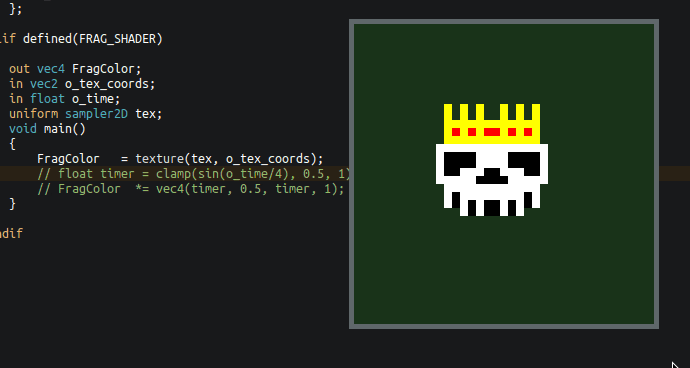

Embedding Shader Source Code in a C/C++ Program
Include a shader as a string inside your code (and make it hot-reloadable)
Most OpenGL tutorials will tell you to first include any shader code by writing it out as a string literal:
const char* vertex_shader_source = "#version 330 core\n" "layout(location = 0) in vec3 aPos;\n" "void main() {\n" " gl_Position = vec4(aPos, 1.0);\n" "}\n"; const char* fragment_shader_source = "#version 330 core\n" "out vec4 FragColor;\n" "void main() {\n" " FragColor = vec4(1.0, 0.5, 0.2, 1.0);\n" "}\n";
However:
- Newline characters makes this clumsy (forgetting the newline will break things
in case of the
#versiondirective) - Annoying to write
- No GLSL specific syntax highlighting possible
I was exploring how to better include the source code without having to write some bespoke shader management code that would have to load in a file, allocate memory for the string, append a null terminator, etc. I.e., something that just works quickly for prototyping.
My requirements were:
- It shouldn't rely on an additional preprocessing step (e.g. invoking something
in a
CMakeLists.txt) - I should still have the option of having the shader source code in a separate file
- It would be nice to still be able to hot-reload any shader
All solutions build on a stringify macro that includes the #version directive by
default. This needs to be done because the # character will always be
interpreted as a C preprocessor directive when it is the first non-whitespace
character in a source file.
#define SHADER_STRINGIFY(x) "#version 330\n" #x
Using this macro, you have the option of specifying shader code inline without having to write out quotes or newlines:
// first option: shader src code as an inlined string const char* inline_shader = SHADER_STRINGIFY( uniform mat4 u_mvp; in vec2 in_pos; in vec2 in_uv; out vec2 v_uv; void main( ) { v_uv = in_uv; gl_Position = u_mvp * vec4(in_pos, 0, 1); } ); printf("INLINE:\n%s\n\n", inline_shader);
As a second option, we can write out the shader code in its own file and wrap it
inside the stringify macro:
SHADER_STRINGIFY(
uniform mat4 u_mvp;
in vec2 in_pos;
in vec2 in_uv;
out vec2 v_uv;
void main( )
{
v_uv = in_uv;
gl_Position = u_mvp * vec4(in_pos, 0, 1);
}
)
We can then #include this file in our C/C++ source code like so:
// second option: shader src code as an included file const char* file_shader = #include "shader.vert" ; printf("FILE:\n%s\n\n", file_shader);
If you prefer not to have a dangling semicolon, you can instead write it at the
end of the shader.vert. However, using the version without the
semicolon at the end lets you write code using initializers:
typedef struct shader_t { const char* name; // shader name const char* code; // shader source code as a string } shader_t; shader_t shader = { "Shader Name", #include "reload.vert" };
Hot-Reloading Shaders
If you implement code hot-reloading, you can get hot-reloadable shaders for basically free with this method1.
All you need to do is to recompile and link the shader program again after you have loaded in the new DLL.
void* dll_handle = dlopen("code.dll", RTLD_NOW); if (dll_handle == NULL) { printf("Opening DLL failed. Trying again...\n"); } while (dll_handle == NULL) { dll_handle = dlopen(DLL_FILENAME, RTLD_NOW); } // fill function pointers create_shaders = (void (*)(state_t*)) dlsym(dll_handle, "create_shaders"); // reload all shaders create_shaders(&state);
If you don't want to compile all shaders again and instead only the ones that have changed, you could either compare all old source code strings against the new ones 2 or check for new file modification timestamps and only reload the corresponding shaders. But at that point, you would probably be better of implementing a conventional shader management system that loads in shaders as real text files.